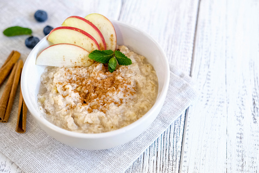

Home

quick healthy oatmeal
ingredients:
- 1 cup oats(50-60 grams)
- 250 ml milk
- a banana or dry fruits
- bit of sugar or jaggery
thats it!!
steps to this delicious stuff:
- put the milk to heat
- add the raw oats to it
- let it cook for 2 minutes
- great!! its ready , add some dry fruits or banana slices
- enjoy